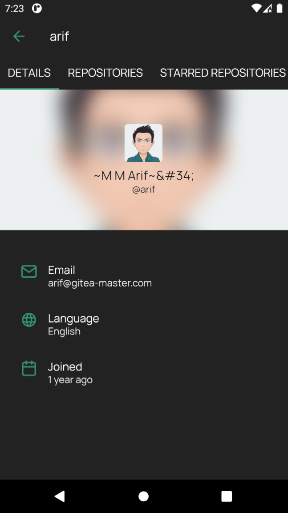
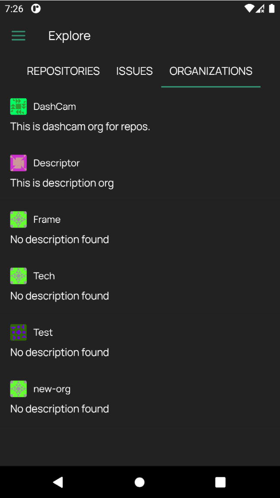
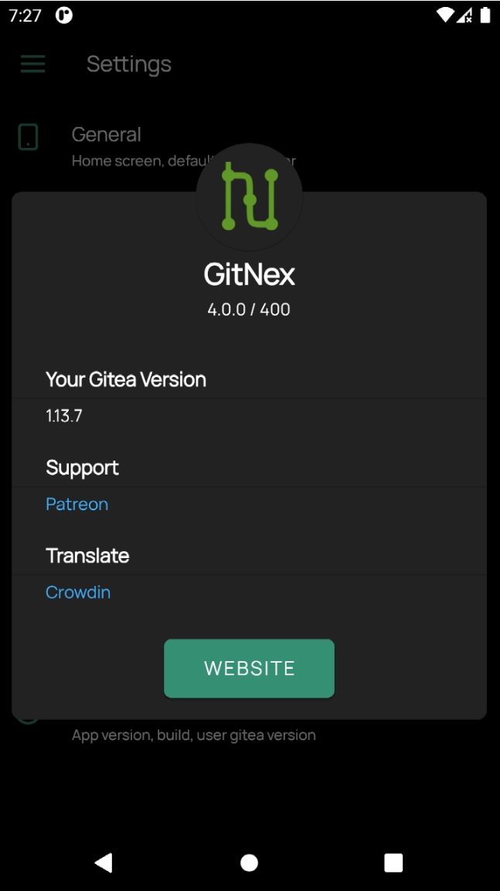
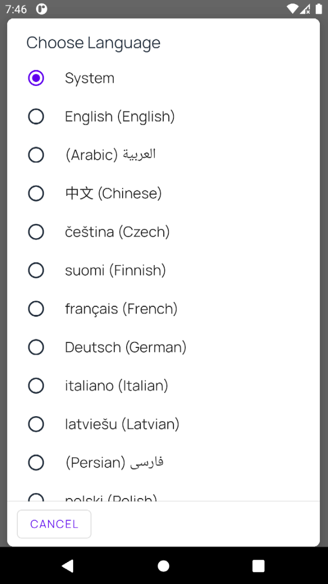

GitNex 4.0.0 is released with user profiles and more
Aug 16, 2021 by @mmarif
GitNex 4.0.0 was in development for over 4 months and we are proud to announce a release totay which every user would appreciate.
1. User profiles
The main highlight of this release is viewing user profiles. You can view profile info, repositories, organizations, followers, following.
User profile
2. Explore public organizations
In the previous release we introduced public issues list which you can browse and participate in it, in this release we have added to explore public organizations. You can then further explore each organization info, repositories, teams etc on tap.
Public organizations
3. New dialog popup for About App
This may not concern many users, but it is a step to unify many screen at later releases for better UX.
About screen
4. Notifications for all accounts
If you have multiple accounts, you will now get notifications for all of them.
5. Revamped UI across the whole app
In this release we have worked on the app UI to improve the UX. You will come across many screens but I would say almost all screens to see minor or major changes in it.

App UI: repository screen has no more extra lines and shades
6. Delete head branch after PR is merged
If you forgot to delete a branch after merge. You can delete it now, just go to the PR and tap on the three dotted menu.
7. Time selection for changing dark theme
GitNex now provides you to select the time of theme changing, previously it was set to 6pm to 6am. In upcoming releases, we will add follow system theme.

Theme time for changing
8. More deep linking
We have added more deep links to the app in this release. You can now go directly to user profile, create issue/pr, releases, milestones etc.
9. Localized language list
GitNex 4.0.0 now comes with system language. Which means a fresh installation will follow your phone language if it is available in the app and the list is also localized now.
Localized language list
10. Remove PDF rendering as it became broken with recent Android updates
This may come as a surprise but the PDF library used in GitNex for rendering PDF files in the file viewer is broken, we removed it to let other apps take care of this. This move drastically reduced the app size from 25MB(+) to 8MB.
Improvements:
This is not the full list of improvements and enhancements we made to the app, some you may notice while using the app and some not.- Improve markdown rendering with pooling
- Add private icon to repository toolbar, archived message in repository info
- Improve comment title in reply dialog
- Make links clickable in Markdown
- Hide mark as read button when no notifications are available
- Go back to repository screen when coming from links for issue/pr
Bug fixes:
- Fix link handler scroll issue
- Fix crash on repository with no files
- Fix security bug in biometric auth
- Fix markdown rendering after editing file
We hope you will enjoy this release and GitNex as a whole.
If GitNex is helpful in some way in your daily tasks, you can consider helping the project by spreading the word, contributing, donating, buying the paid version(play store).
Contribute Downloads